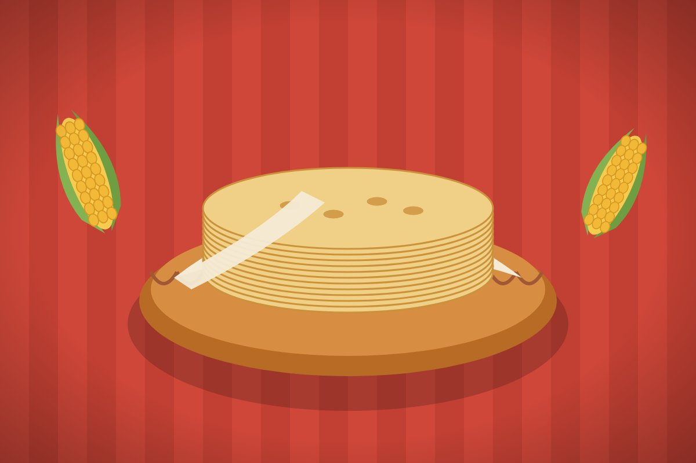
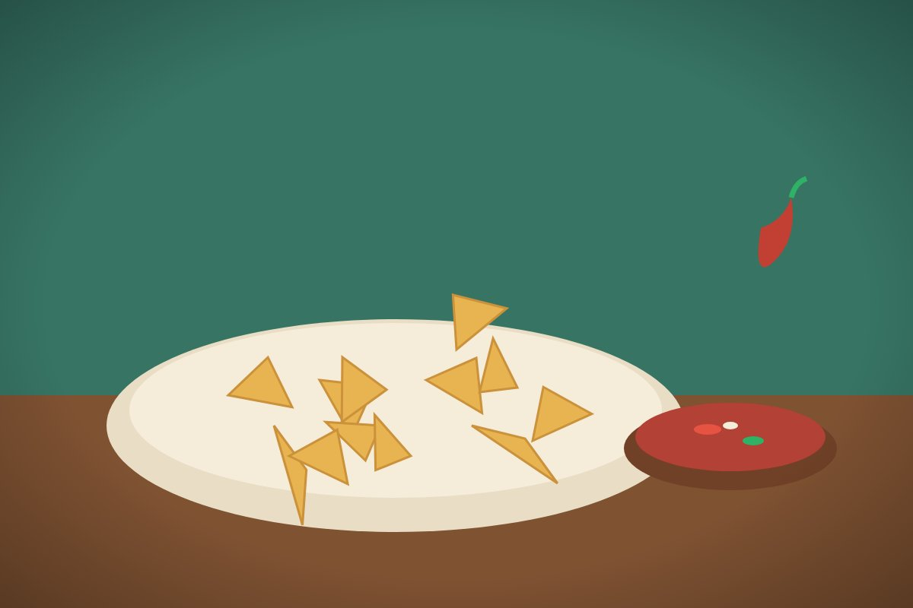
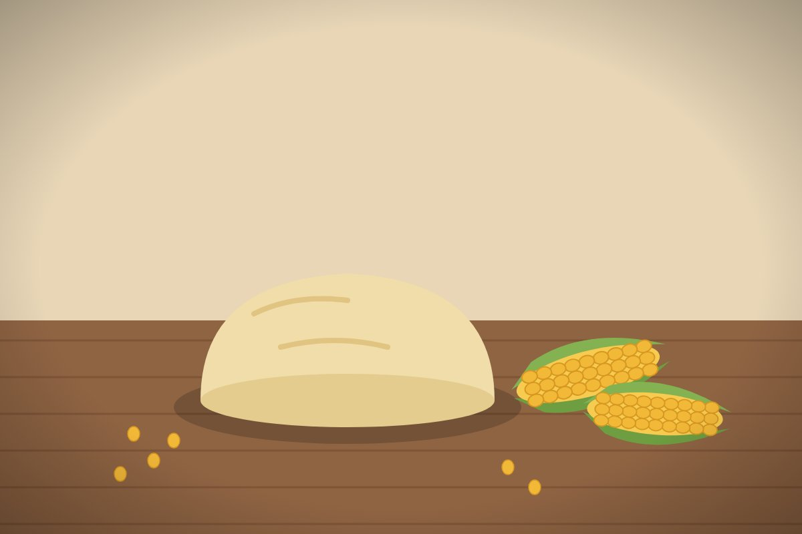

En Tortillería Peña trabajamos principalmente con maíz, y de él salen casi todos nuestros productos. La masa se prepara cada mañana, por eso recomendamos comprar temprano si la quieres para tamales o para hacer tus propias tortillas en casa.

Tortilla de maíz
La de todos los días. Se vende por kilo, caliente y recién salida de la máquina.

Totopos
Tortilla cortada en triángulos y dorada, perfecta para chilaquiles o para botanear con salsa.

Masa
Masa de maíz nixtamalizado para preparar tortillas en casa, gorditas, sopes o tamales.
¿Cómo se hace la tortilla?
El maíz se cuece con agua y cal, y se deja reposar toda la noche. A este proceso se le llama nixtamalización y es lo que le da a la tortilla su sabor y su textura. Al día siguiente el maíz se lava y se muele en el molino hasta obtener la masa.
La masa pasa a la máquina tortilladora, que la aplana, la corta en círculos y la lleva por el comal para que se cueza de los dos lados. Al final la tortilla se enfría un poco, se cuenta por kilo y se empaca para venderse caliente en el mostrador o para el reparto.
Consejos para guardarla
- Guárdala en el refrigerador dentro de una bolsa cerrada para que no se seque.
- Para recalentarla, ponla en el comal caliente unos segundos de cada lado.
- Lo ideal es consumirla en dos o tres días, porque no lleva conservadores.